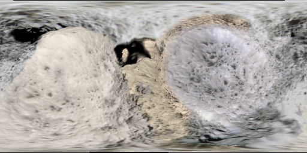

PPlanetary Maps cuz why not
Planet maps i made so far
Mercury |
Venus |
Earth |
Mars |
Asteroid Belt |
Comets |
Jupiter |
Saturn |
Uranus |
Neptune |
Pluto |
Saturn
Hyperion
Below is an 2K map of Hyperion I constructed by
reprojecting and overlaying images from the Cassini flybys
onto a model of Hyperion
The Cassini images are from
NASA and Wikipedia

Mosaic,
Grayscale,
True color-
(image updated 19/08/2024)